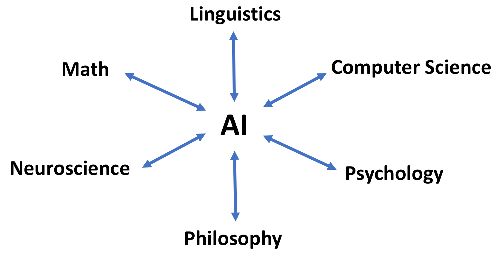
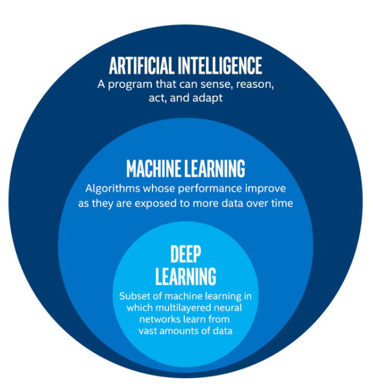
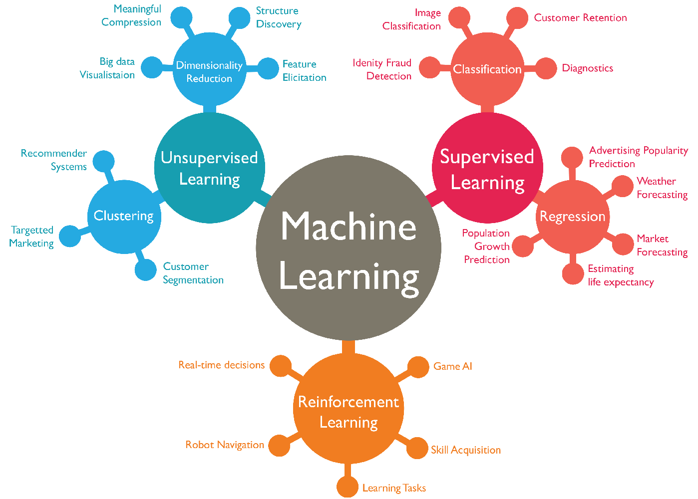
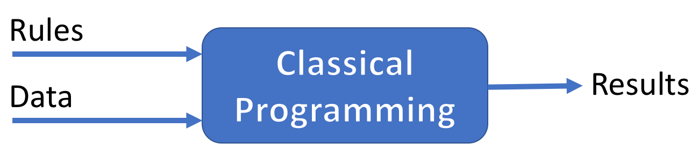
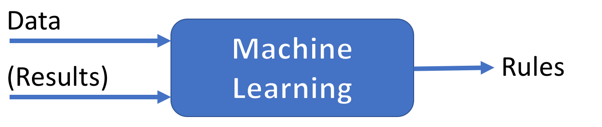
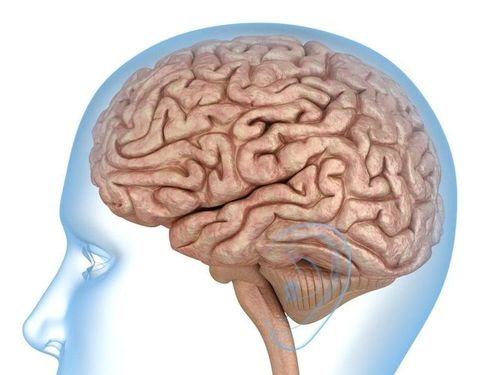

Deconstructing AI
Summary
- What Is AI, Actually?
- How Do Machines Learn?
- Should We Be Scared Of AI?
What Is AI, Actually?
AI is a project
Make machines perform tasks that are generally associated to human intelligence.
A more formal definition of AI
“AI refers to systems that display intelligent behavior by analysing their environment and taking actions - with some degree of autonomy - to achieve specific goals”. (AI HLEG, EU)
AI systems can be either:
- Purely software-based (e.g. voice assistants, search engines, face recognition systems).
- Embedded in hardware devices (e.g. robots, autonomous cars, drones).
Main areas of research
- Problem solving (e.g. search algorithms, constraint solving).
- Reasoning and decision making (e.g. logic, knowledge representation).
- Machine Learning.
- Real-world interactions (e.g. computer vision, natural language understanding, robotics).
AI is a moving target
As soon as AI successfully solves a problem, the problem is no longer considered a part of AI.
The tumultuous history of AI

AI is a highly interdisciplinary field

AI is a social science
AI has many social and societal implications:
- Job market transformation.
- Human/machine interactions.
- Trust and acceptability.
- Legal aspects and regulation.
- Fairness.
- Ethical use.
- Personal data.
- …
AI comes in different flavours
- Substitutive intelligence: replacement of men by machines.
- Augmented intelligence: human-centered AI for performance augmentation & autonomy enhancement.
- Hybrid intelligence: human-machine collaboration on complex tasks.
How Do Machines Learn?
Machine Learning in a nutshell
Set of techniques for giving machines the ability to find patterns and extract rules from data, in order to:
- Identify or classify elements.
- Detect tendencies.
- Make predictions.
As more data is fed into the system, results get better: performance improves with experience.
a.k.a. Statistical Learning.


A new paradigm


But not a silver bullet!
- Some use cases are a better fit for ML than others:
- Difficulty to express the actions as rules.
- Data too complex for traditional analytical methods.
- Performance > interpretability.
- Data quality is paramount.
The Machine Learning workflow
- Frame the problem.
- Collect, analyze and prepare data.
- Select and train several models on data.
- Tune the chosen model.
- Deploy the model to production.
Algorithm #1: K-Nearest Neighbors
Prediction is based on the k nearest neighbors of a data sample.

Algorithm #2: Decision Trees
Build a tree-like structure based on a series of discovered questions on the data.

Algorithm #3: Neural Networks
- Layers of loosely neuron-inpired computation units.
- Can approximate any continuous function.


Training a network

The Deep Learning tsunami
- Multilayered neural networks trained on (generally) vast amounts of data.
- Since 2010, outperformed previous state-of-the-art techniques in many fields (language translation, image and scene recognition…).


From labs to everyday life


Should We Be Scared Of AI?
AI is altering the job market…
- Machines outperform humans in a growing list of cognitive tasks.
- Repetitive tasks are most exposed (even complex ones, like medical diagnosis or financial analysis).
- Entire industries are on the verge of disruption (example: truck-based transportation, first employer in the U.S.).
… For better or worse
- Net impact of AI on job quantity is unknown.
- Most jobs will be transformed, not replaced by AI.
- Boring and repetitive stuff will be automated.
- AI will add new insight to help human decision.
- Human/machine interactions will multiply.
- Their quality will be a key factor of performance for organizations.
AGI is very far away
- Current AI systems are weak: highly tuned to perform well in one task.
- Artificial General Intelligence a.k.a. strong AI, the ability to perform any task as well as a human, is out of reach.

The intelligence debate
- Despite their complexity, ML and DL algorithms can be viewed as merely curve fitting.
- On the contrary, some AI researchers envision DL as a new form of algorithmic reasoning, somehow mimicking the human brain.
The human brain is a masterpiece
- Approx. 86 billions neurons in 1.4 kg.
- Typical energy consumption: 20 W (!)
- So much of it is still waiting to be discovered.
